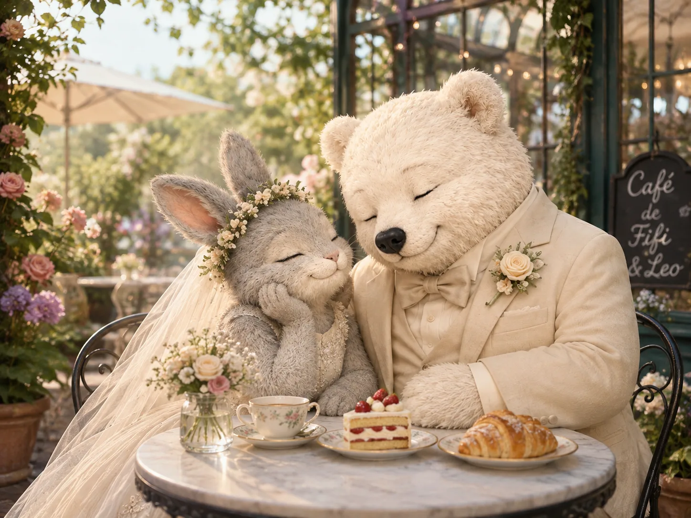
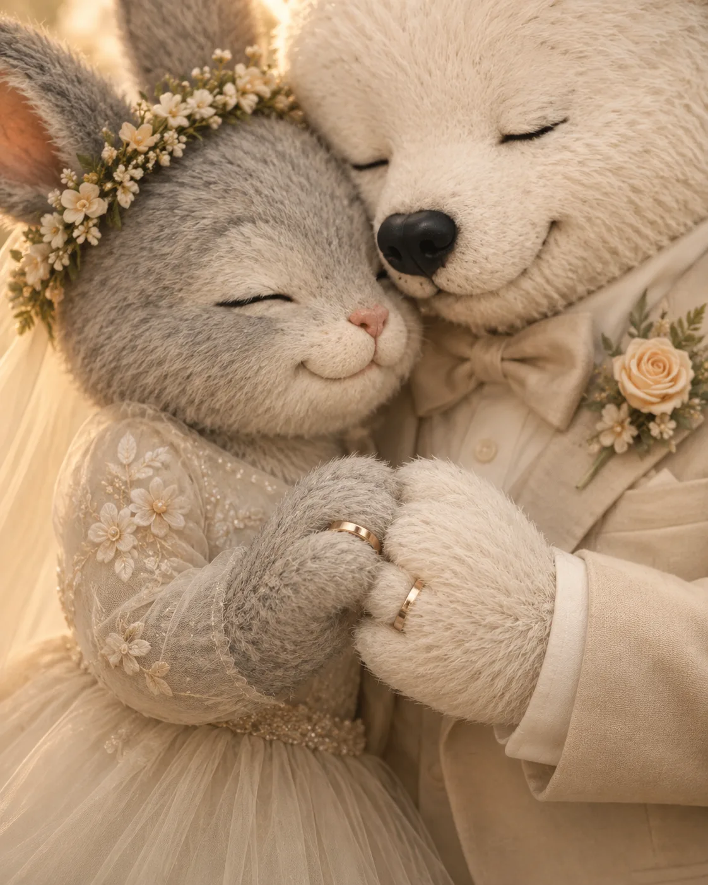
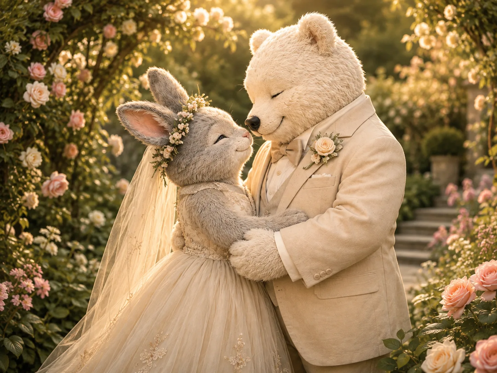
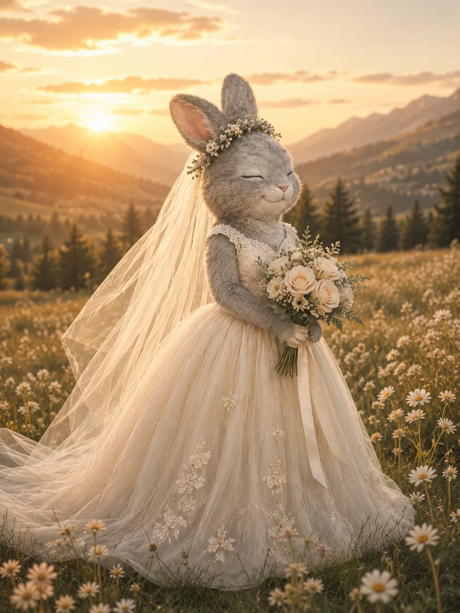
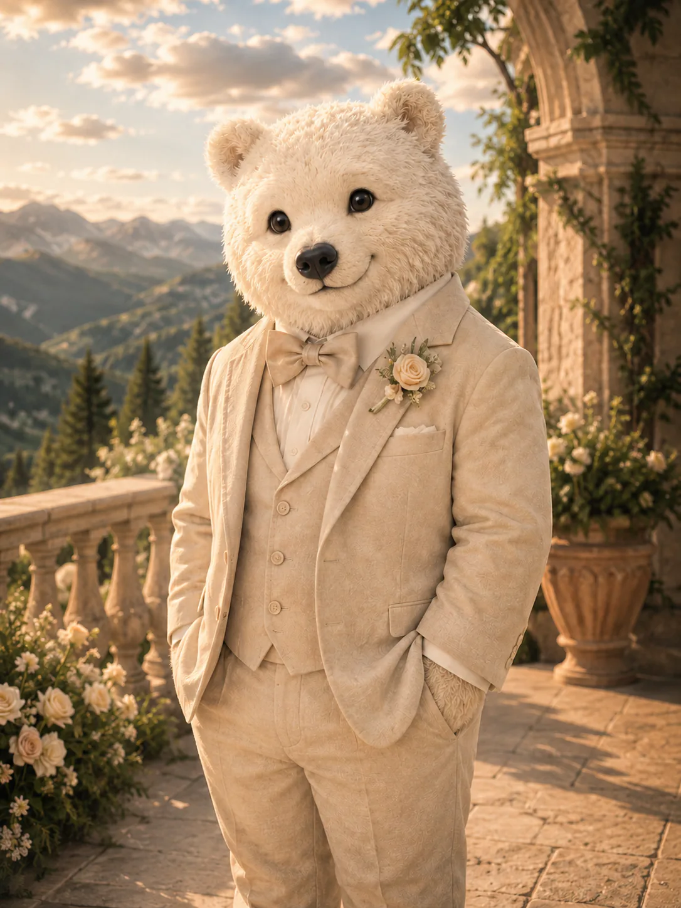
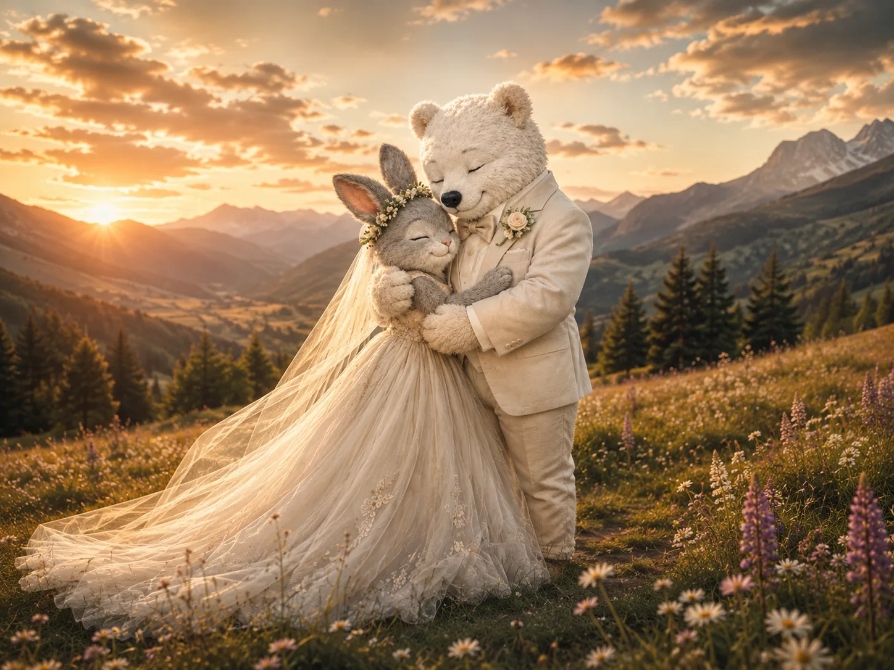
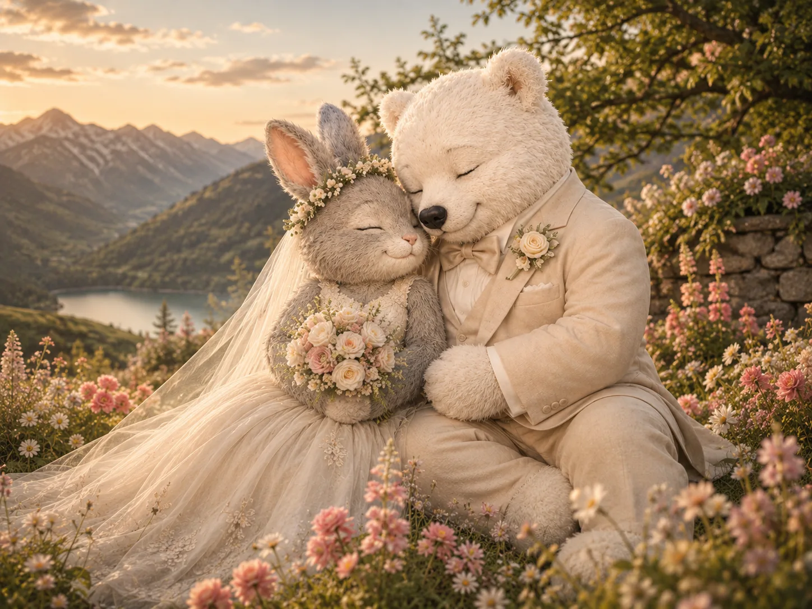
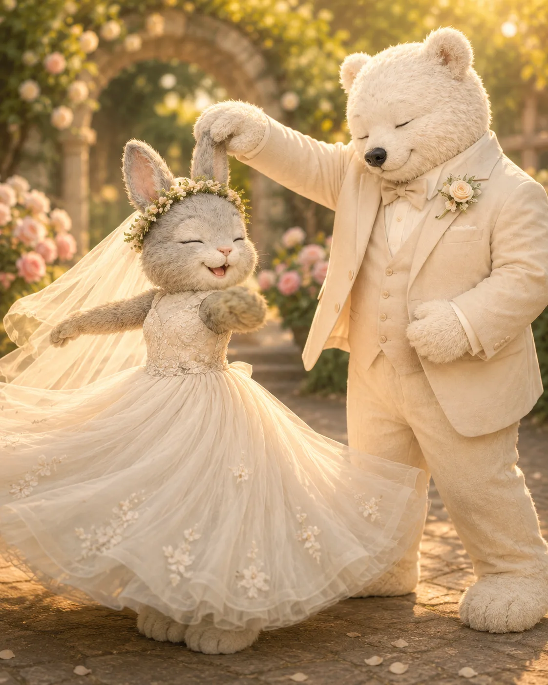

Our Story
有些愛情不是突然發生的傳奇，而是在許多平凡日子裡，慢慢確認彼此值得信任、值得等待，也值得一起想像未來。

他們保留彼此的不同，也把每一次靠近，都變成一個共同的選擇。

愛不是把兩個人合併成一個，
而是共同維持兩人之間的空間。
Two lives,
held in relation.

Date
Fifi 與 Leo 不需要成為彼此的影子。他們保留自己的步調，也願意在每一次選擇裡，為對方多走近一步。


有些愛情不是突然發生的傳奇，而是在許多平凡日子裡，慢慢確認彼此值得信任、值得等待，也值得一起想像未來。

他們保留彼此的不同，也把每一次靠近，都變成一個共同的選擇。

我們會在 ，與最想念的人一起走進這一天。
有時並肩看向遠方，有時只需要一個眼神。距離改變了，兩個人仍在同一片光裡。



期待你來到陽明山，在傍晚的光裡見證我們的承諾，接著一起吃飯、說笑，留下一個溫暖的夜晚。
建議於證婚開始前 30 分鐘抵達，留一點時間問候彼此，也讓這一天從容展開。
婚禮位於陽明山。山區傍晚溫度較低，建議攜帶薄外套，並優先搭乘婚禮接駁車前往。
The Garden Hall
台北市士林區菁山路 101 號劍潭站婚禮接駁
接駁車由捷運劍潭站 1 號出口出發，班次為 14:45、15:10、15:35；回程於 20:30、21:00 發車。場地停車位有限，開車前往請於 RSVP 登記車號。
從遠景走近一個眼神、一個擁抱與一雙交握的手。這些照片記下兩個人如何在同一片光裡靠近。
為了讓每位賓客都能從容參與，以下先整理最常需要確認的事項。
建議穿著半正式或正式服裝，選擇能自在行走的鞋履。為了保留新人的婚禮色彩，也請避免以全白造型出席。
請依喜帖上的邀請姓名回覆；如有攜伴或兒童名額，會一併顯示於正式 RSVP。座位將依最終回覆安排。
建議搭乘劍潭站婚禮接駁車。自行開車請於 RSVP 登記車號；如需要無障礙入口、輪椅空間或其他協助，也請在留言欄告訴我們。
線上回覆將於 2027 年 3 月 1 日開放，請於 4 月 18 日前完成。每份邀請請由一位代表回覆，並註明飲食需求、同行賓客與停車車號。